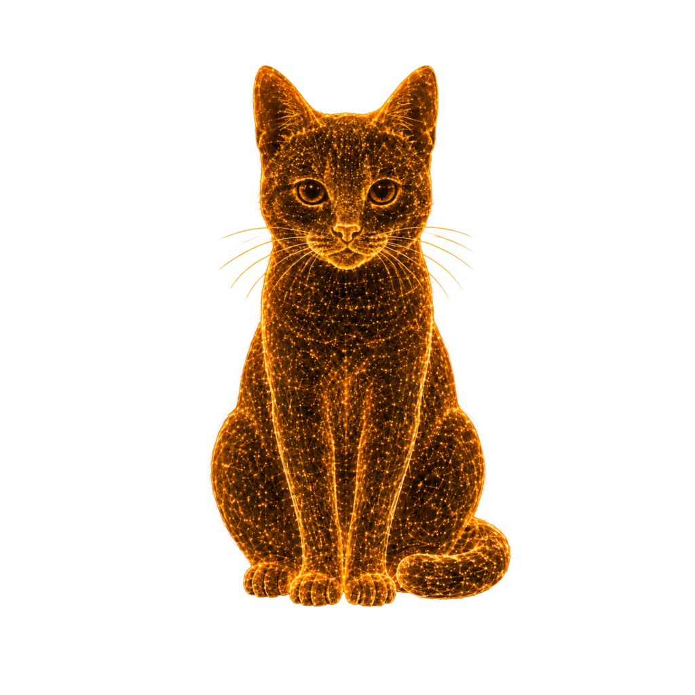

WebGL is unavailable in this browser, so the chamber cannot render.
The physics panels still work.
CHAMBER 01|ψ⟩=cat(α=3.20, n=6)r=0.75φ=0.785κ=0.020DPR=1.5BLOOM ON
3210−1−2−3
3210−1−2−3
−3−2−10123
State vector |ψ⟩
SuperpositionP(x) = ∫W dp
Alivebranch 3 of 6 · x = +2.14